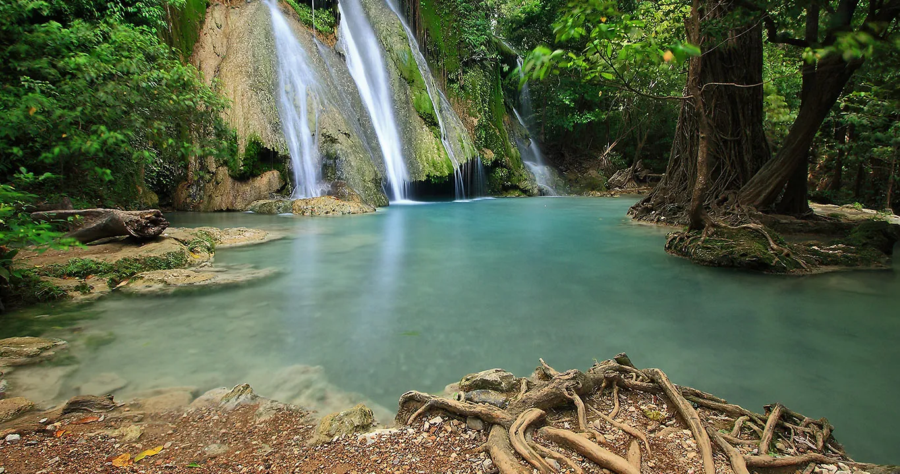
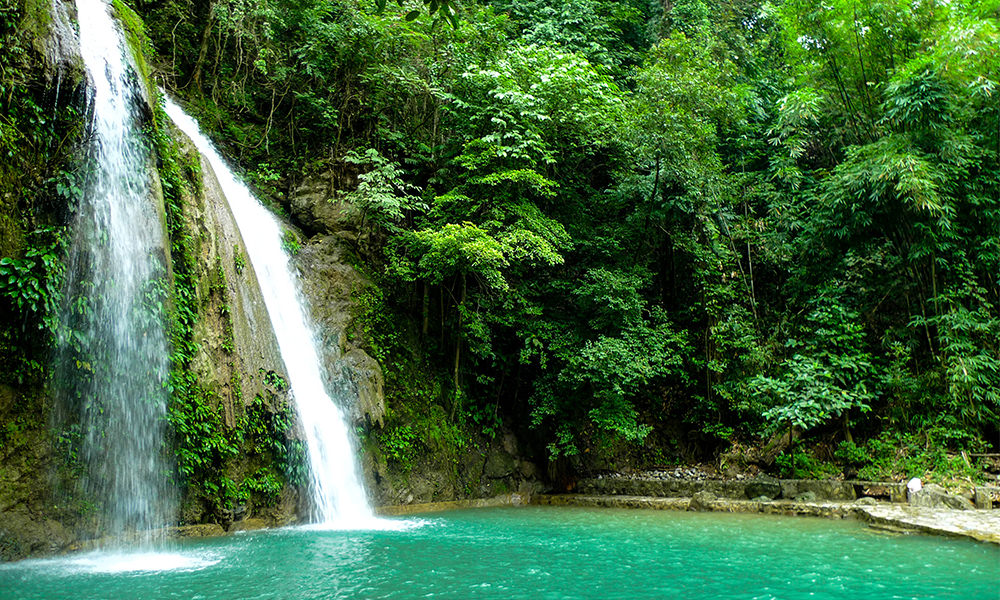
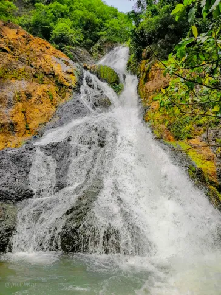

Hinulugang Taktak
Antipolo's legendary waterfall, now a restored National Park featuring a swimming pool, wall climbing, and hanging bridges.

Daranak Falls
A 14-meter high cascade in Tanay surrounded by lush vegetation, perfect for family picnics and natural cold plunges.

Tinipak River
Consistently voted as the cleanest inland body of water in the region, featuring white marble rocks and crystal-clear turquoise waters.

Batlag Falls
Just a short walk above Daranak, this quieter, more secluded waterfall drops beautifully over a wide, mossy limestone wall.

Palo Alto Falls
Tucked inside a leisure estate in Baras, this 60-foot waterfall requires a scenic 250-step climb to reach its refreshing basin.

Tungtong Falls
A hidden gem in Taytay offering a multi-tiered cascade and a more rugged, adventurous river-trekking experience.